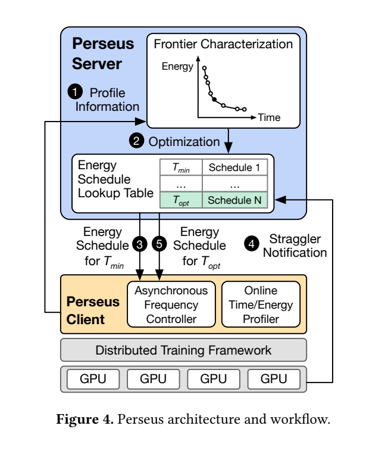
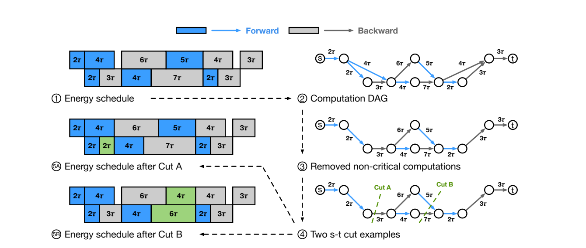
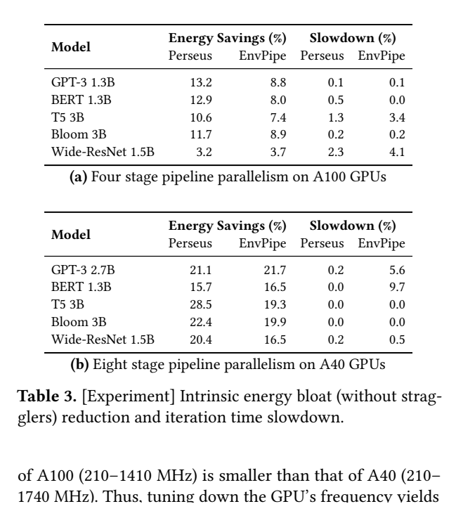

Perseus：训练流水线频率调度：原图原表阅读索引#
整理日期：2026-11-06。读者原创中文解读；原图归论文作者／出版方。未运行作者实验，不是独立复现。
覆盖范围： 本版本正文中识别到的21项图、表或算法；保留原编号。关键项已裁图并在技术精读相应段落出现，未内嵌的项可点PDF页链接查看，不上传整篇PDF。
统计总边界： 同GPU资源、同任务schedule对照，但跨模型和跨GPU的百分比不构成独立重复。真实小规模测试与大规模emulation必须分列。松弛所得前沿为近似，不应宣传原离散问题全局精确最优；低开销控制也不表示无需profiling。
Fig1：原训练流水线#
- 本项回答的问题： 原训练流水线，用于支撑这条方法或实验链中的具体环节。
- 组成、坐标和对照： 先读图题、图例、坐标/表头与单位，再在同一负载和同一基线内比较。相同迭代下计算时间不均衡。 按原图／表标示的单位与归一化基准阅读；不将不同子图或不同分母的柱高直接相除。 颜色按原图图例辨认，不能把同色跨图视为同一组。
- 阅读顺序与统计单位： 先看设定、单位和图例，再看趋势与作者正文。重复次数及采样独立性参见本篇技术精读统计节；没有为该图定位到的误差线定义／独立重复数，不另行猜测。
- 直接观察： 相同迭代下计算时间不均衡。
- 作者解释的范围： 原文以该图／表作为上述观察的结构说明或实验支撑，需连同对应页正文读取；本索引不额外替作者推导因果机制。
- 独立判断（AI分析）： 只支持此图所列的模型、设备、输入与测量口径；相同迭代下计算时间不均衡。 不能由单图推出E902或其他GPU的同幅收益。
- 证据链位置： 性能验证／定量或示例证据，需结合实验条件。它支持本文具体条件下的实现或结果，不单独完成跨平台验证。
- 结论与强度： 可复述“相同迭代下计算时间不均衡。”；对图内描述的核查可信度高，对未做独立实验的泛化判断为中或无法判断。不能得出的结论是“只支持此图所列的模型、设备、输入与测量口径；相同迭代下计算时间不均衡。 不能由单图推出E902或其他GPU的同幅收益。”所排除的外推。
Fig2：intrinsic/extrinsic等待#
- 本项回答的问题： intrinsic/extrinsic等待，用于支撑这条方法或实验链中的具体环节。
- 组成、坐标和对照： 先读图题、图例、坐标/表头与单位，再在同一负载和同一基线内比较。stage等待与straggler等待来自不同结构。 按原图／表标示的单位与归一化基准阅读；不将不同子图或不同分母的柱高直接相除。 颜色按原图图例辨认，不能把同色跨图视为同一组。
- 阅读顺序与统计单位： 先看设定、单位和图例，再看趋势与作者正文。重复次数及采样独立性参见本篇技术精读统计节；没有为该图定位到的误差线定义／独立重复数，不另行猜测。
- 直接观察： stage等待与straggler等待来自不同结构。
- 作者解释的范围： 原文以该图／表作为上述观察的结构说明或实验支撑，需连同对应页正文读取；本索引不额外替作者推导因果机制。
- 独立判断（AI分析）： 只支持此图所列的模型、设备、输入与测量口径；stage等待与straggler等待来自不同结构。 不能由单图推出E902或其他GPU的同幅收益。
- 证据链位置： 性能验证／定量或示例证据，需结合实验条件。它支持本文具体条件下的实现或结果，不单独完成跨平台验证。
- 结论与强度： 可复述“stage等待与straggler等待来自不同结构。”；对图内描述的核查可信度高，对未做独立实验的泛化判断为中或无法判断。不能得出的结论是“只支持此图所列的模型、设备、输入与测量口径；stage等待与straggler等待来自不同结构。 不能由单图推出E902或其他GPU的同幅收益。”所排除的外推。
Fig3：慢者约束三情况#
- 本项回答的问题： 慢者约束三情况，用于支撑这条方法或实验链中的具体环节。
- 组成、坐标和对照： 先读图题、图例、坐标/表头与单位，再在同一负载和同一基线内比较。目标时间受最小能量点与慢者时间共同限制。 按原图／表标示的单位与归一化基准阅读；不将不同子图或不同分母的柱高直接相除。 颜色按原图图例辨认，不能把同色跨图视为同一组。
- 阅读顺序与统计单位： 先看设定、单位和图例，再看趋势与作者正文。重复次数及采样独立性参见本篇技术精读统计节；没有为该图定位到的误差线定义／独立重复数，不另行猜测。
- 直接观察： 目标时间受最小能量点与慢者时间共同限制。
- 作者解释的范围： 原文以该图／表作为上述观察的结构说明或实验支撑，需连同对应页正文读取；本索引不额外替作者推导因果机制。
- 独立判断（AI分析）： 只支持此图所列的模型、设备、输入与测量口径；目标时间受最小能量点与慢者时间共同限制。 不能由单图推出E902或其他GPU的同幅收益。
- 证据链位置： 性能验证／定量或示例证据，需结合实验条件。它支持本文具体条件下的实现或结果，不单独完成跨平台验证。
- 结论与强度： 可复述“目标时间受最小能量点与慢者时间共同限制。”；对图内描述的核查可信度高，对未做独立实验的泛化判断为中或无法判断。不能得出的结论是“只支持此图所列的模型、设备、输入与测量口径；目标时间受最小能量点与慢者时间共同限制。 不能由单图推出E902或其他GPU的同幅收益。”所排除的外推。
Fig4：服务端/客户端架构#


- 本项回答的问题： 服务端/客户端架构，用于支撑这条方法或实验链中的具体环节。
- 组成、坐标和对照： 先读图题、图例、坐标/表头与单位，再在同一负载和同一基线内比较。剖析、图优化和异步控制角色不同。 结构／流程类没有统一数值坐标；箭头表示数据或控制关系，不表示统计因果。 颜色按原图图例辨认，不能把同色跨图视为同一组。
- 阅读顺序与统计单位： 先看设定、单位和图例，再看趋势与作者正文。重复次数及采样独立性参见本篇技术精读统计节；没有为该图定位到的误差线定义／独立重复数，不另行猜测。
- 直接观察： 剖析、图优化和异步控制角色不同。
- 作者解释的范围： 原文以该图／表作为上述观察的结构说明或实验支撑，需连同对应页正文读取；本索引不额外替作者推导因果机制。
- 独立判断（AI分析）： 只支持此图所列的模型、设备、输入与测量口径；剖析、图优化和异步控制角色不同。 不能由单图推出E902或其他GPU的同幅收益。
- 证据链位置： 方法／系统实现说明。它支持本文具体条件下的实现或结果，不单独完成跨平台验证。
- 结论与强度： 可复述“剖析、图优化和异步控制角色不同。”；对图内描述的核查可信度高，对未做独立实验的泛化判断为中或无法判断。不能得出的结论是“只支持此图所列的模型、设备、输入与测量口径；剖析、图优化和异步控制角色不同。 不能由单图推出E902或其他GPU的同幅收益。”所排除的外推。
Fig5：从低能量端追踪前沿#
- 本项回答的问题： 从低能量端追踪前沿，用于支撑这条方法或实验链中的具体环节。
- 组成、坐标和对照： 先读图题、图例、坐标/表头与单位，再在同一负载和同一基线内比较。不是从全最高频schedule逐项贪心降频。 按原图／表标示的单位与归一化基准阅读；不将不同子图或不同分母的柱高直接相除。 颜色按原图图例辨认，不能把同色跨图视为同一组。
- 阅读顺序与统计单位： 先看设定、单位和图例，再看趋势与作者正文。重复次数及采样独立性参见本篇技术精读统计节；没有为该图定位到的误差线定义／独立重复数，不另行猜测。
- 直接观察： 不是从全最高频schedule逐项贪心降频。
- 作者解释的范围： 原文以该图／表作为上述观察的结构说明或实验支撑，需连同对应页正文读取；本索引不额外替作者推导因果机制。
- 独立判断（AI分析）： 只支持此图所列的模型、设备、输入与测量口径；不是从全最高频schedule逐项贪心降频。 不能由单图推出E902或其他GPU的同幅收益。
- 证据链位置： 性能验证／定量或示例证据，需结合实验条件。它支持本文具体条件下的实现或结果，不单独完成跨平台验证。
- 结论与强度： 可复述“不是从全最高频schedule逐项贪心降频。”；对图内描述的核查可信度高，对未做独立实验的泛化判断为中或无法判断。不能得出的结论是“只支持此图所列的模型、设备、输入与测量口径；不是从全最高频schedule逐项贪心降频。 不能由单图推出E902或其他GPU的同幅收益。”所排除的外推。
Fig6：关键图与最小割#


- 本项回答的问题： 关键图与最小割，用于支撑这条方法或实验链中的具体环节。
- 组成、坐标和对照： 先读图题、图例、坐标/表头与单位，再在同一负载和同一基线内比较。需同时缩短所有关键路径。 按原图／表标示的单位与归一化基准阅读；不将不同子图或不同分母的柱高直接相除。 颜色按原图图例辨认，不能把同色跨图视为同一组。
- 阅读顺序与统计单位： 先看设定、单位和图例，再看趋势与作者正文。重复次数及采样独立性参见本篇技术精读统计节；没有为该图定位到的误差线定义／独立重复数，不另行猜测。
- 直接观察： 需同时缩短所有关键路径。
- 作者解释的范围： 原文以该图／表作为上述观察的结构说明或实验支撑，需连同对应页正文读取；本索引不额外替作者推导因果机制。
- 独立判断（AI分析）： 只支持此图所列的模型、设备、输入与测量口径；需同时缩短所有关键路径。 不能由单图推出E902或其他GPU的同幅收益。
- 证据链位置： 性能验证／定量或示例证据，需结合实验条件。它支持本文具体条件下的实现或结果，不单独完成跨平台验证。
- 结论与强度： 可复述“需同时缩短所有关键路径。”；对图内描述的核查可信度高，对未做独立实验的泛化判断为中或无法判断。不能得出的结论是“只支持此图所列的模型、设备、输入与测量口径；需同时缩短所有关键路径。 不能由单图推出E902或其他GPU的同幅收益。”所排除的外推。
Fig7：大规模收益拆分#
- 本项回答的问题： 大规模收益拆分，用于支撑这条方法或实验链中的具体环节。
- 组成、坐标和对照： 先读图题、图例、坐标/表头与单位，再在同一负载和同一基线内比较。明确是Emulation。 按原图／表标示的单位与归一化基准阅读；不将不同子图或不同分母的柱高直接相除。 颜色按原图图例辨认，不能把同色跨图视为同一组。
- 阅读顺序与统计单位： 先看设定、单位和图例，再看趋势与作者正文。重复次数及采样独立性参见本篇技术精读统计节；没有为该图定位到的误差线定义／独立重复数，不另行猜测。
- 直接观察： 明确是Emulation。
- 作者解释的范围： 原文以该图／表作为上述观察的结构说明或实验支撑，需连同对应页正文读取；本索引不额外替作者推导因果机制。
- 独立判断（AI分析）： 只支持此图所列的模型、设备、输入与测量口径；明确是Emulation。 不能由单图推出E902或其他GPU的同幅收益。
- 证据链位置： 性能验证／定量或示例证据，需结合实验条件。它支持本文具体条件下的实现或结果，不单独完成跨平台验证。
- 结论与强度： 可复述“明确是Emulation。”；对图内描述的核查可信度高，对未做独立实验的泛化判断为中或无法判断。不能得出的结论是“只支持此图所列的模型、设备、输入与测量口径；明确是Emulation。 不能由单图推出E902或其他GPU的同幅收益。”所排除的外推。
Fig8：慢者比例扫描#
- 本项回答的问题： 慢者比例扫描，用于支撑这条方法或实验链中的具体环节。
- 组成、坐标和对照： 先读图题、图例、坐标/表头与单位，再在同一负载和同一基线内比较。每条曲线对应不同慢者条件。 按原图／表标示的单位与归一化基准阅读；不将不同子图或不同分母的柱高直接相除。 颜色按原图图例辨认，不能把同色跨图视为同一组。
- 阅读顺序与统计单位： 先看设定、单位和图例，再看趋势与作者正文。重复次数及采样独立性参见本篇技术精读统计节；没有为该图定位到的误差线定义／独立重复数，不另行猜测。
- 直接观察： 每条曲线对应不同慢者条件。
- 作者解释的范围： 原文以该图／表作为上述观察的结构说明或实验支撑，需连同对应页正文读取；本索引不额外替作者推导因果机制。
- 独立判断（AI分析）： 只支持此图所列的模型、设备、输入与测量口径；每条曲线对应不同慢者条件。 不能由单图推出E902或其他GPU的同幅收益。
- 证据链位置： 性能验证／定量或示例证据，需结合实验条件。它支持本文具体条件下的实现或结果，不单独完成跨平台验证。
- 结论与强度： 可复述“每条曲线对应不同慢者条件。”；对图内描述的核查可信度高，对未做独立实验的泛化判断为中或无法判断。不能得出的结论是“只支持此图所列的模型、设备、输入与测量口径；每条曲线对应不同慢者条件。 不能由单图推出E902或其他GPU的同幅收益。”所排除的外推。
Fig9：真实E–T前沿#
- 本项回答的问题： 真实E–T前沿，用于支撑这条方法或实验链中的具体环节。
- 组成、坐标和对照： 先读图题、图例、坐标/表头与单位，再在同一负载和同一基线内比较。同一目标迭代时间比较能量。 按原图／表标示的单位与归一化基准阅读；不将不同子图或不同分母的柱高直接相除。 颜色按原图图例辨认，不能把同色跨图视为同一组。
- 阅读顺序与统计单位： 先看设定、单位和图例，再看趋势与作者正文。重复次数及采样独立性参见本篇技术精读统计节；没有为该图定位到的误差线定义／独立重复数，不另行猜测。
- 直接观察： 同一目标迭代时间比较能量。
- 作者解释的范围： 原文以该图／表作为上述观察的结构说明或实验支撑，需连同对应页正文读取；本索引不额外替作者推导因果机制。
- 独立判断（AI分析）： 只支持此图所列的模型、设备、输入与测量口径；同一目标迭代时间比较能量。 不能由单图推出E902或其他GPU的同幅收益。
- 证据链位置： 性能验证／定量或示例证据，需结合实验条件。它支持本文具体条件下的实现或结果，不单独完成跨平台验证。
- 结论与强度： 可复述“同一目标迭代时间比较能量。”；对图内描述的核查可信度高，对未做独立实验的泛化判断为中或无法判断。不能得出的结论是“只支持此图所列的模型、设备、输入与测量口径；同一目标迭代时间比较能量。 不能由单图推出E902或其他GPU的同幅收益。”所排除的外推。
Fig10：最优目标时间示意#
- 本项回答的问题： 最优目标时间示意，用于支撑这条方法或实验链中的具体环节。
- 组成、坐标和对照： 先读图题、图例、坐标/表头与单位，再在同一负载和同一基线内比较。附录解释straggler与最低能量点。 按原图／表标示的单位与归一化基准阅读；不将不同子图或不同分母的柱高直接相除。 颜色按原图图例辨认，不能把同色跨图视为同一组。
- 阅读顺序与统计单位： 先看设定、单位和图例，再看趋势与作者正文。重复次数及采样独立性参见本篇技术精读统计节；没有为该图定位到的误差线定义／独立重复数，不另行猜测。
- 直接观察： 附录解释straggler与最低能量点。
- 作者解释的范围： 原文以该图／表作为上述观察的结构说明或实验支撑，需连同对应页正文读取；本索引不额外替作者推导因果机制。
- 独立判断（AI分析）： 只支持此图所列的模型、设备、输入与测量口径；附录解释straggler与最低能量点。 不能由单图推出E902或其他GPU的同幅收益。
- 证据链位置： 性能验证／定量或示例证据，需结合实验条件。它支持本文具体条件下的实现或结果，不单独完成跨平台验证。
- 结论与强度： 可复述“附录解释straggler与最低能量点。”；对图内描述的核查可信度高，对未做独立实验的泛化判断为中或无法判断。不能得出的结论是“只支持此图所列的模型、设备、输入与测量口径；附录解释straggler与最低能量点。 不能由单图推出E902或其他GPU的同幅收益。”所排除的外推。
Fig11：E–T剖析拟合#
- 本项回答的问题： E–T剖析拟合，用于支撑这条方法或实验链中的具体环节。
- 组成、坐标和对照： 先读图题、图例、坐标/表头与单位，再在同一负载和同一基线内比较。连续曲线拟合不保证离散原问题精确。 按原图／表标示的单位与归一化基准阅读；不将不同子图或不同分母的柱高直接相除。 颜色按原图图例辨认，不能把同色跨图视为同一组。
- 阅读顺序与统计单位： 先看设定、单位和图例，再看趋势与作者正文。重复次数及采样独立性参见本篇技术精读统计节；没有为该图定位到的误差线定义／独立重复数，不另行猜测。
- 直接观察： 连续曲线拟合不保证离散原问题精确。
- 作者解释的范围： 原文以该图／表作为上述观察的结构说明或实验支撑，需连同对应页正文读取；本索引不额外替作者推导因果机制。
- 独立判断（AI分析）： 只支持此图所列的模型、设备、输入与测量口径；连续曲线拟合不保证离散原问题精确。 不能由单图推出E902或其他GPU的同幅收益。
- 证据链位置： 性能验证／定量或示例证据，需结合实验条件。它支持本文具体条件下的实现或结果，不单独完成跨平台验证。
- 结论与强度： 可复述“连续曲线拟合不保证离散原问题精确。”；对图内描述的核查可信度高，对未做独立实验的泛化判断为中或无法判断。不能得出的结论是“只支持此图所列的模型、设备、输入与测量口径；连续曲线拟合不保证离散原问题精确。 不能由单图推出E902或其他GPU的同幅收益。”所排除的外推。
Fig12：A40完整前沿#
- 本项回答的问题： A40完整前沿，用于支撑这条方法或实验链中的具体环节。
- 组成、坐标和对照： 先读图题、图例、坐标/表头与单位，再在同一负载和同一基线内比较。模型间差异保留。 按原图／表标示的单位与归一化基准阅读；不将不同子图或不同分母的柱高直接相除。 颜色按原图图例辨认，不能把同色跨图视为同一组。
- 阅读顺序与统计单位： 先看设定、单位和图例，再看趋势与作者正文。重复次数及采样独立性参见本篇技术精读统计节；没有为该图定位到的误差线定义／独立重复数，不另行猜测。
- 直接观察： 模型间差异保留。
- 作者解释的范围： 原文以该图／表作为上述观察的结构说明或实验支撑，需连同对应页正文读取；本索引不额外替作者推导因果机制。
- 独立判断（AI分析）： 只支持此图所列的模型、设备、输入与测量口径；模型间差异保留。 不能由单图推出E902或其他GPU的同幅收益。
- 证据链位置： 性能验证／定量或示例证据，需结合实验条件。它支持本文具体条件下的实现或结果，不单独完成跨平台验证。
- 结论与强度： 可复述“模型间差异保留。”；对图内描述的核查可信度高，对未做独立实验的泛化判断为中或无法判断。不能得出的结论是“只支持此图所列的模型、设备、输入与测量口径；模型间差异保留。 不能由单图推出E902或其他GPU的同幅收益。”所排除的外推。
Fig13：A100完整前沿#
- 本项回答的问题： A100完整前沿，用于支撑这条方法或实验链中的具体环节。
- 组成、坐标和对照： 先读图题、图例、坐标/表头与单位，再在同一负载和同一基线内比较。硬件频率范围不同。 按原图／表标示的单位与归一化基准阅读；不将不同子图或不同分母的柱高直接相除。 颜色按原图图例辨认，不能把同色跨图视为同一组。
- 阅读顺序与统计单位： 先看设定、单位和图例，再看趋势与作者正文。重复次数及采样独立性参见本篇技术精读统计节；没有为该图定位到的误差线定义／独立重复数，不另行猜测。
- 直接观察： 硬件频率范围不同。
- 作者解释的范围： 原文以该图／表作为上述观察的结构说明或实验支撑，需连同对应页正文读取；本索引不额外替作者推导因果机制。
- 独立判断（AI分析）： 只支持此图所列的模型、设备、输入与测量口径；硬件频率范围不同。 不能由单图推出E902或其他GPU的同幅收益。
- 证据链位置： 性能验证／定量或示例证据，需结合实验条件。它支持本文具体条件下的实现或结果，不单独完成跨平台验证。
- 结论与强度： 可复述“硬件频率范围不同。”；对图内描述的核查可信度高，对未做独立实验的泛化判断为中或无法判断。不能得出的结论是“只支持此图所列的模型、设备、输入与测量口径；硬件频率范围不同。 不能由单图推出E902或其他GPU的同幅收益。”所排除的外推。
Table1：stage不均衡#
- 本项回答的问题： stage不均衡，用于支撑这条方法或实验链中的具体环节。
- 组成、坐标和对照： 先读图题、图例、坐标/表头与单位，再在同一负载和同一基线内比较。参数均衡不等于时间均衡。 按原图／表标示的单位与归一化基准阅读；不将不同子图或不同分母的柱高直接相除。 颜色按原图图例辨认，不能把同色跨图视为同一组。
- 阅读顺序与统计单位： 先看设定、单位和图例，再看趋势与作者正文。重复次数及采样独立性参见本篇技术精读统计节；没有为该图定位到的误差线定义／独立重复数，不另行猜测。
- 直接观察： 参数均衡不等于时间均衡。
- 作者解释的范围： 原文以该图／表作为上述观察的结构说明或实验支撑，需连同对应页正文读取；本索引不额外替作者推导因果机制。
- 独立判断（AI分析）： 只支持此图所列的模型、设备、输入与测量口径；参数均衡不等于时间均衡。 不能由单图推出E902或其他GPU的同幅收益。
- 证据链位置： 性能验证／定量或示例证据，需结合实验条件。它支持本文具体条件下的实现或结果，不单独完成跨平台验证。
- 结论与强度： 可复述“参数均衡不等于时间均衡。”；对图内描述的核查可信度高，对未做独立实验的泛化判断为中或无法判断。不能得出的结论是“只支持此图所列的模型、设备、输入与测量口径；参数均衡不等于时间均衡。 不能由单图推出E902或其他GPU的同幅收益。”所排除的外推。
Table2：客户端API#
- 本项回答的问题： 客户端API，用于支撑这条方法或实验链中的具体环节。
- 组成、坐标和对照： 先读图题、图例、坐标/表头与单位，再在同一负载和同一基线内比较。set_speed与计算边界相关。 按原图／表标示的单位与归一化基准阅读；不将不同子图或不同分母的柱高直接相除。 颜色按原图图例辨认，不能把同色跨图视为同一组。
- 阅读顺序与统计单位： 先看设定、单位和图例，再看趋势与作者正文。重复次数及采样独立性参见本篇技术精读统计节；没有为该图定位到的误差线定义／独立重复数，不另行猜测。
- 直接观察： set_speed与计算边界相关。
- 作者解释的范围： 原文以该图／表作为上述观察的结构说明或实验支撑，需连同对应页正文读取；本索引不额外替作者推导因果机制。
- 独立判断（AI分析）： 只支持此图所列的模型、设备、输入与测量口径；set_speed与计算边界相关。 不能由单图推出E902或其他GPU的同幅收益。
- 证据链位置： 性能验证／定量或示例证据，需结合实验条件。它支持本文具体条件下的实现或结果，不单独完成跨平台验证。
- 结论与强度： 可复述“set_speed与计算边界相关。”；对图内描述的核查可信度高，对未做独立实验的泛化判断为中或无法判断。不能得出的结论是“只支持此图所列的模型、设备、输入与测量口径；set_speed与计算边界相关。 不能由单图推出E902或其他GPU的同幅收益。”所排除的外推。
Table3：真实平台无慢者#


- 本项回答的问题： 真实平台无慢者，用于支撑这条方法或实验链中的具体环节。
- 组成、坐标和对照： 先读图题、图例、坐标/表头与单位，再在同一负载和同一基线内比较。节能必须与slowdown一起读。 按原图／表标示的单位与归一化基准阅读；不将不同子图或不同分母的柱高直接相除。 颜色按原图图例辨认，不能把同色跨图视为同一组。
- 阅读顺序与统计单位： 先看设定、单位和图例，再看趋势与作者正文。重复次数及采样独立性参见本篇技术精读统计节；没有为该图定位到的误差线定义／独立重复数，不另行猜测。
- 直接观察： 节能必须与slowdown一起读。
- 作者解释的范围： 原文以该图／表作为上述观察的结构说明或实验支撑，需连同对应页正文读取；本索引不额外替作者推导因果机制。
- 独立判断（AI分析）： 只支持此图所列的模型、设备、输入与测量口径；节能必须与slowdown一起读。 不能由单图推出E902或其他GPU的同幅收益。
- 证据链位置： 性能验证／定量或示例证据，需结合实验条件。它支持本文具体条件下的实现或结果，不单独完成跨平台验证。
- 结论与强度： 可复述“节能必须与slowdown一起读。”；对图内描述的核查可信度高，对未做独立实验的泛化判断为中或无法判断。不能得出的结论是“只支持此图所列的模型、设备、输入与测量口径；节能必须与slowdown一起读。 不能由单图推出E902或其他GPU的同幅收益。”所排除的外推。
Table4：真实平台有慢者#
- 本项回答的问题： 真实平台有慢者，用于支撑这条方法或实验链中的具体环节。
- 组成、坐标和对照： 先读图题、图例、坐标/表头与单位，再在同一负载和同一基线内比较。T′/T改变等待余量。 按原图／表标示的单位与归一化基准阅读；不将不同子图或不同分母的柱高直接相除。 颜色按原图图例辨认，不能把同色跨图视为同一组。
- 阅读顺序与统计单位： 先看设定、单位和图例，再看趋势与作者正文。重复次数及采样独立性参见本篇技术精读统计节；没有为该图定位到的误差线定义／独立重复数，不另行猜测。
- 直接观察： T′/T改变等待余量。
- 作者解释的范围： 原文以该图／表作为上述观察的结构说明或实验支撑，需连同对应页正文读取；本索引不额外替作者推导因果机制。
- 独立判断（AI分析）： 只支持此图所列的模型、设备、输入与测量口径；T′/T改变等待余量。 不能由单图推出E902或其他GPU的同幅收益。
- 证据链位置： 性能验证／定量或示例证据，需结合实验条件。它支持本文具体条件下的实现或结果，不单独完成跨平台验证。
- 结论与强度： 可复述“T′/T改变等待余量。”；对图内描述的核查可信度高，对未做独立实验的泛化判断为中或无法判断。不能得出的结论是“只支持此图所列的模型、设备、输入与测量口径；T′/T改变等待余量。 不能由单图推出E902或其他GPU的同幅收益。”所排除的外推。
Table5：emulation规模#
- 本项回答的问题： emulation规模，用于支撑这条方法或实验链中的具体环节。
- 组成、坐标和对照： 先读图题、图例、坐标/表头与单位，再在同一负载和同一基线内比较。不能称全部实测。 按原图／表标示的单位与归一化基准阅读；不将不同子图或不同分母的柱高直接相除。 颜色按原图图例辨认，不能把同色跨图视为同一组。
- 阅读顺序与统计单位： 先看设定、单位和图例，再看趋势与作者正文。重复次数及采样独立性参见本篇技术精读统计节；没有为该图定位到的误差线定义／独立重复数，不另行猜测。
- 直接观察： 不能称全部实测。
- 作者解释的范围： 原文以该图／表作为上述观察的结构说明或实验支撑，需连同对应页正文读取；本索引不额外替作者推导因果机制。
- 独立判断（AI分析）： 只支持此图所列的模型、设备、输入与测量口径；不能称全部实测。 不能由单图推出E902或其他GPU的同幅收益。
- 证据链位置： 性能验证／定量或示例证据，需结合实验条件。它支持本文具体条件下的实现或结果，不单独完成跨平台验证。
- 结论与强度： 可复述“不能称全部实测。”；对图内描述的核查可信度高，对未做独立实验的泛化判断为中或无法判断。不能得出的结论是“只支持此图所列的模型、设备、输入与测量口径；不能称全部实测。 不能由单图推出E902或其他GPU的同幅收益。”所排除的外推。
Table6：大规模模型收益#
- 本项回答的问题： 大规模模型收益，用于支撑这条方法或实验链中的具体环节。
- 组成、坐标和对照： 先读图题、图例、坐标/表头与单位，再在同一负载和同一基线内比较。建模前提决定外推。 按原图／表标示的单位与归一化基准阅读；不将不同子图或不同分母的柱高直接相除。 颜色按原图图例辨认，不能把同色跨图视为同一组。
- 阅读顺序与统计单位： 先看设定、单位和图例，再看趋势与作者正文。重复次数及采样独立性参见本篇技术精读统计节；没有为该图定位到的误差线定义／独立重复数，不另行猜测。
- 直接观察： 建模前提决定外推。
- 作者解释的范围： 原文以该图／表作为上述观察的结构说明或实验支撑，需连同对应页正文读取；本索引不额外替作者推导因果机制。
- 独立判断（AI分析）： 只支持此图所列的模型、设备、输入与测量口径；建模前提决定外推。 不能由单图推出E902或其他GPU的同幅收益。
- 证据链位置： 性能验证／定量或示例证据，需结合实验条件。它支持本文具体条件下的实现或结果，不单独完成跨平台验证。
- 结论与强度： 可复述“建模前提决定外推。”；对图内描述的核查可信度高，对未做独立实验的泛化判断为中或无法判断。不能得出的结论是“只支持此图所列的模型、设备、输入与测量口径；建模前提决定外推。 不能由单图推出E902或其他GPU的同幅收益。”所排除的外推。
Algorithm1：前沿迭代#
- 本项回答的问题： 前沿迭代，用于支撑这条方法或实验链中的具体环节。
- 组成、坐标和对照： 先读图题、图例、坐标/表头与单位，再在同一负载和同一基线内比较。τ影响精度与计算时间。 按原图／表标示的单位与归一化基准阅读；不将不同子图或不同分母的柱高直接相除。 颜色按原图图例辨认，不能把同色跨图视为同一组。
- 阅读顺序与统计单位： 先看设定、单位和图例，再看趋势与作者正文。重复次数及采样独立性参见本篇技术精读统计节；没有为该图定位到的误差线定义／独立重复数，不另行猜测。
- 直接观察： τ影响精度与计算时间。
- 作者解释的范围： 原文以该图／表作为上述观察的结构说明或实验支撑，需连同对应页正文读取；本索引不额外替作者推导因果机制。
- 独立判断（AI分析）： 只支持此图所列的模型、设备、输入与测量口径；τ影响精度与计算时间。 不能由单图推出E902或其他GPU的同幅收益。
- 证据链位置： 性能验证／定量或示例证据，需结合实验条件。它支持本文具体条件下的实现或结果，不单独完成跨平台验证。
- 结论与强度： 可复述“τ影响精度与计算时间。”；对图内描述的核查可信度高，对未做独立实验的泛化判断为中或无法判断。不能得出的结论是“只支持此图所列的模型、设备、输入与测量口径；τ影响精度与计算时间。 不能由单图推出E902或其他GPU的同幅收益。”所排除的外推。
Algorithm2：下一调度#
- 本项回答的问题： 下一调度，用于支撑这条方法或实验链中的具体环节。
- 组成、坐标和对照： 先读图题、图例、坐标/表头与单位，再在同一负载和同一基线内比较。处理单选择操作与合法关键割。 按原图／表标示的单位与归一化基准阅读；不将不同子图或不同分母的柱高直接相除。 颜色按原图图例辨认，不能把同色跨图视为同一组。
- 阅读顺序与统计单位： 先看设定、单位和图例，再看趋势与作者正文。重复次数及采样独立性参见本篇技术精读统计节；没有为该图定位到的误差线定义／独立重复数，不另行猜测。
- 直接观察： 处理单选择操作与合法关键割。
- 作者解释的范围： 原文以该图／表作为上述观察的结构说明或实验支撑，需连同对应页正文读取；本索引不额外替作者推导因果机制。
- 独立判断（AI分析）： 只支持此图所列的模型、设备、输入与测量口径；处理单选择操作与合法关键割。 不能由单图推出E902或其他GPU的同幅收益。
- 证据链位置： 性能验证／定量或示例证据，需结合实验条件。它支持本文具体条件下的实现或结果，不单独完成跨平台验证。
- 结论与强度： 可复述“处理单选择操作与合法关键割。”；对图内描述的核查可信度高，对未做独立实验的泛化判断为中或无法判断。不能得出的结论是“只支持此图所列的模型、设备、输入与测量口径；处理单选择操作与合法关键割。 不能由单图推出E902或其他GPU的同幅收益。”所排除的外推。